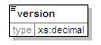
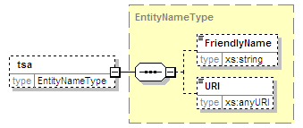

| diagram | |||||||||||||
| namespace | urn:oasis:names:tc:evs:schema:eml:ts | ||||||||||||
| children | version policy serialNumber genTime accuracy ordering nonce tsa | ||||||||||||
| used by |
|
||||||||||||
| attributes |
|
||||||||||||
| source | <xs:complexType name="TSTXMLInfoType"> <xs:sequence> <xs:element name="version" type="xs:decimal"/> <xs:element name="policy" type="ObjectIdentifierType"/> <xs:element name="serialNumber" type="xs:decimal"/> <xs:element name="genTime" type="xs:dateTime"/> <xs:element name="accuracy" type="AccuracyType" minOccurs="0"/> <xs:element name="ordering" type="xs:boolean" default="false" minOccurs="0"/> <xs:element name="nonce" type="xs:decimal" minOccurs="0"/> <xs:element name="tsa" type="EntityNameType" minOccurs="0"/> </xs:sequence> <xs:attribute name="Id" type="xs:ID" use="required"/> </xs:complexType> |
attribute TSTXMLInfoType/@Id
| type | xs:ID | ||||
| properties |
|
||||
| source | <xs:attribute name="Id" type="xs:ID" use="required"/> |
element TSTXMLInfoType/version
| diagram |  | ||||
| namespace | urn:oasis:names:tc:evs:schema:eml:ts | ||||
| type | xs:decimal | ||||
| properties |
|
||||
| source | <xs:element name="version" type="xs:decimal"/> |
element TSTXMLInfoType/policy
| diagram | |||||
| namespace | urn:oasis:names:tc:evs:schema:eml:ts | ||||
| type | ObjectIdentifierType | ||||
| properties |
|
||||
| children | Identifier Description DocumentationReferences | ||||
| source | <xs:element name="policy" type="ObjectIdentifierType"/> |
element TSTXMLInfoType/serialNumber
| diagram | |||||
| namespace | urn:oasis:names:tc:evs:schema:eml:ts | ||||
| type | xs:decimal | ||||
| properties |
|
||||
| source | <xs:element name="serialNumber" type="xs:decimal"/> |
element TSTXMLInfoType/genTime
| diagram | |||||
| namespace | urn:oasis:names:tc:evs:schema:eml:ts | ||||
| type | xs:dateTime | ||||
| properties |
|
||||
| source | <xs:element name="genTime" type="xs:dateTime"/> |
element TSTXMLInfoType/accuracy
| diagram | |||||||||
| namespace | urn:oasis:names:tc:evs:schema:eml:ts | ||||||||
| type | AccuracyType | ||||||||
| properties |
|
||||||||
| children | seconds millis micros | ||||||||
| source | <xs:element name="accuracy" type="AccuracyType" minOccurs="0"/> |
element TSTXMLInfoType/ordering
| diagram |  |
||||||||||
| namespace | urn:oasis:names:tc:evs:schema:eml:ts | ||||||||||
| type | xs:boolean | ||||||||||
| properties |
|
||||||||||
| source | <xs:element name="ordering" type="xs:boolean" default="false" minOccurs="0"/> |
element TSTXMLInfoType/nonce
| diagram |  |
||||||||
| namespace | urn:oasis:names:tc:evs:schema:eml:ts | ||||||||
| type | xs:decimal | ||||||||
| properties |
|
||||||||
| source | <xs:element name="nonce" type="xs:decimal" minOccurs="0"/> |
element TSTXMLInfoType/tsa
| diagram |  | ||||||||
| namespace | urn:oasis:names:tc:evs:schema:eml:ts | ||||||||
| type | EntityNameType | ||||||||
| properties |
|
||||||||
| children | FriendlyName URI | ||||||||
| source | <xs:element name="tsa" type="EntityNameType" minOccurs="0"/> |
XML Schema documentation generated by XMLSpy Schema Editor http://www.altova.com/xmlspy